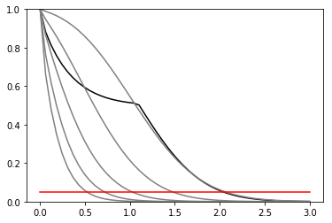

Import XML¶
In [353]:
%pylab inline
Populating the interactive namespace from numpy and matplotlib
In [366]:
import pyhf
import pyhf.readxml
reload(pyhf.readxml)
spec = pyhf.readxml.parse('../../validation/xmlimport_input/config/example.xml', '../../validation/xmlimport_input/')
pdf = pyhf.Model(spec['channels'])
pdf
Out[366]:
<pyhf.Model at 0x131e068d0>
In [367]:
data = [binvalue for k in pdf.config.channel_order for binvalue in spec['data'][k]] + pdf.auxdata
data
Out[367]:
[122.0, 112.0, 0, 0, 0]
In [368]:
print(pdf.config.suggested_init())
pdf.expected_actualdata(pdf.config.suggested_init())
[0.0, 1.0, 0.0, 0.0]
Out[368]:
[120.0, 110.0]
In [376]:
def assemble(pdf, **kwargs):
pars = pdf.config.suggested_init()
for k, v in kwargs.items():
pars[pdf.config.par_slice(k)] = v
return pars
def disassemble(pdf, pars):
return {
k: pars[pdf.config.par_slice(k)] for k in pdf.config.par_map
}
print pdf.expected_data(assemble(pdf, SigXsecOverSM = [1.0], syst1 = [0.0], syst2 = [0.0], syst3 = [0.0]))
pars = assemble(pdf, SigXsecOverSM = [2.0], syst2 = [0.0], syst3 = [0.0])
disassemble(pdf,pars)
spec['channels']['channel1']['signal']['data']
[120. 110. 0. 0. 0.]
Out[376]:
array([20., 10.], dtype=float32)
In [370]:
mutests = np.linspace(0,3)
results = [pyhf.runOnePoint(mu, data, pdf, pdf.config.suggested_init(), pdf.config.suggested_bounds()) for mu in mutests]
In [371]:
obs = [r[-2:][0] for r in results]
exp = [r[-2:][1][i] for r in results] for i in range(5)]
def plot_results(testmus,cls_obs, cls_exp, test_size = 0.05):
plt.plot(testmus,cls_obs, c = 'k')
for i,c in zip(range(5),['grey','grey','grey','grey','grey']):
plt.plot(testmus,cls_exp[i], c = c)
plt.plot(testmus,[test_size]*len(testmus), c = 'r')
plt.ylim(0,1)
plot_results(mutests,obs,exp)
